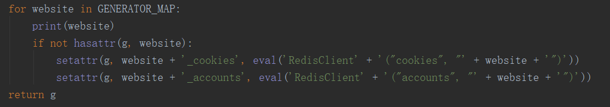

引言：
在阅读源码时，有很多简写的形式，其中一个比较常用的就是getattr()用来调用一个类中的变量或者方法，相关联的hasattr()、getattr()、setattr()函数的使用也一并学习了一下。
正文：
判断object对象中是否存在name属性，当然对于python的对象而言，属性包含变量和方法；有则返回True，没有则返回False；需要注意的是name参数是string类型，所以不管是要判断变量还是方法，其名称都以字符串形式传参；getattr和setattr也同样；
>>>
>>> class A():
name = 'python'
def func(self):
return 'A()类的方法func()'
>>>
>>> hasattr(A, 'name')
True
>>>
>>> hasattr(A, 'age')
False
>>>
>>> hasattr(A, 'func')
True
获取object对象的属性的值，如果存在则返回属性值，如果不存在分为两种情况：
（1）没有default参数时，会直接报错；
（2）给定了default参数，若对象本身没有name属性，则会返回给定的default值；
如果给定的属性name是对象的方法，则返回的是函数对象，需要调用函数对象来获得函数的返回值；调用的话就是函数对象后面加括号，如func之于func();
另外还需要注意：
如果给定的方法func()是实例函数，则不能写getattr(A, 'func')()，因为fun()是实例函数的话，是不能用A类对象来调用的，应该写成getattr(A(), 'func')()；
实例函数和类函数的区别：
实例函数定义时，直接def func(self):，这样定义的函数只能是将类实例化后，用类的实例化对象来调用；
而类函数定义时，需要用@classmethod来装饰，函数默认的参数一般是cls，类函数可以通过类对象来直接调用，而不需要对类进行实例化；
>>>
>>> class A():
name = 'python'
def func(self):
return 'Hello world'
>>>
>>> getattr(A, 'name')
'python'
>>>
>>> getattr(A, 'age') # age变量不存在则报错
Traceback (most recent call last):
File "<pyshell#464>", line 1, in <module>
getattr(A, 'age')
AttributeError: class A has no attribute 'age'
>>>
>>> getattr(A, 'age', 20)
>>>
>>> getattr(A, 'func')
<unbound method A.func>
>>>
>>> getattr(A, 'func')() # func()函数不能被A类对象调用，所以报错， 需要用类的实例化对象来调用
Traceback (most recent call last):
File "<pyshell#470>", line 1, in <module>
getattr(A, 'func')()
TypeError: unbound method func() must be called with A instance as first argument (got nothing instead)
>>>
>>> getattr(A(), 'func')()
'Hello world'
>>>
>>> class A(object):
name = 'python'
@classmethod
def func():
return 'the method of A object.'
>>>
>>> getattr(A, 'func')()
'the method of A object.'
>>>
给object对象的name属性赋值value，如果对象原本存在给定的属性name，则setattr会更改属性的值为给定的value；如果对象原本不存在属性name，setattr会在对象中创建属性，并赋值为给定的value；
>>>
>>> class A():
name = 'python'
def func(self):
return 'Hello world'
>>>
>>> setattr(A, 'name', 'java')
>>> getattr(A, 'name')
'java'
>>>
>>> setattr(A, 'age', 20)
>>> getattr(A, 'age')
20
一般先判断对象中是否存在某属性，如果存在则返回；如果不存在，则给对象增加属性并赋值：
>>> class A():
name = 'python'
def func(self):
return 'Hello world'
>>>
>>> if hasattr(A, 'age'):
print getattr(A, 'age')
else:
setattr(A, 'age', 20)
>>>
>>> getattr(A, 'age')
>>>
感受一下：
